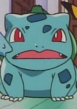

|  |
Bulbasaur |
|
Bulbasaur is a Pokemon from the Kanto region. Bulbasaur is a starter Pokemon that a trainer can choose in Kanto. Bulbasaur are loyal to their trainers. It uses its vines to pick up young Pokemon. Inuko Inuyama voiced Shauna's Bulbasaur. |
 |
Glaceon |
- Pokemon Black and White: Rival Destinies
|
Glaceon is a Pokemon from the Sinnoh region. Glaceon is one of the final forms of Eevee. This Pokemon is able to create small ice crystals around it by controlling its body temperature. This person voices Cynthia's Glaceon. |
 |
Ivysaur |
|
 |
Meowth |
- Pokemon
- Pokemon: Pikachu's Summer Vacation
- Pokemon Movie 1: The First Movie
- Pokemon Movie 2: The Power of One
- Pokemon: Pikachu's Rescue Adventure
- Pokemon: Pikachu's Winter Vacation
- Pokemon: Pikachu and Pichu
- Pokemom Movie 3: Spell of the Unknown
- Pokemon: Pikachu's Winter Vacation 2000
- Pokemon: Pikachu's Pikaboo
- Pokemon Movie 4: Pokemon 4Ever
- Pokemon: Pikachu's Winter Vacation 2001
- Pokemon Movie 5: Heroes - Latias and Latios
- Pokemon: Camp Pikachu
- Pokemon Advanced Generations
- Pokemon: Mewtwo Returns
- Pokemon: Gotta Dance!
- Pokemon Movie 6: Jirachi Wish Maker
- Pokemon: Pichu Bros. in Party Panic
- Pokemon Movie 7: Destiny Deoxys
- Pokemon: Pikachu's Summer Festival
- Pokemon: Pikachu's Ghost Carnival
- Pokemon Movie 8: Lucario and The Mystery of Mew
- Pokemon: Pikachu's Island Adventure
- Pokemon Diamond and Pearl
- Pokemon: The Mastermind of Mirage Pokemon
- Pokemon Movie 9: Pokemon Ranger and the Temple of the Sea
- Pokemon Movie 10: The Rise of Darkrai
- Pokemon: Pikachu Tanken Club
- Pokemon Movie 11: Giratina and The Sky Warrior
- Pokemon: Pikachu's Great Ice Adventure
- Pokemon Movie 12: Arceus and the Jewel of Life
- Pokemon: Pikachu's Great Sparking Search
- Pokemon Black and White
- Pokemon Movie 13: Zoroark The Master of Illusions
- Pokemon: Pikachu's Big Mysterious Adventure
- Pokemon: Meloetta's Moonlight Serenade
- Pokemon Movie 14: White - Victini and Zekrom
- Pokemon Movie 14: Black - Victini and Reshiram
- Pokemon Movie 15: Kyurem vs. The Sword of Justice
- Pokemon Black and White: Rival Destinies
- Pokemon: Meloetta's Sparkling Recital
- Pokemon Movie 16: Genesect and The Legend Awakened
- Pokemon Black and White: Adventure in Unova
- Pokemon Black and White: Decolora Adventure
- Pokemon XY
- Pokemon XY Special: Road to Kalos
- Pokemon: Eevees and Friends
- Pokemon Movie 17: Diancie and the Cocoon of Destruction
- Pokemon: Pikachu, What's This Key?
- Pokemon XY: Fragments of the Heavens
- Pokemon Movie 18: Hoopa and The Clash of Ages
- Pokemon: Pikachu and the Pokemon Band
- Pokemon XYZ
- Pokemon Movie 19: Volcanion and The Mechanical Marvel
- Pokemon Sun and Moon
- Pokemon Movie 20: I Choose You!
|
Meowth is a Pokemon from the Kanto region. Meowths loves shiny objects and has an unique ability to produce coins using Pay Day. It is playful but capacity for human-like intelligence. Inuko Inuyama voices Rocket Team's Meowth. |
| |
Sewaddle |
|